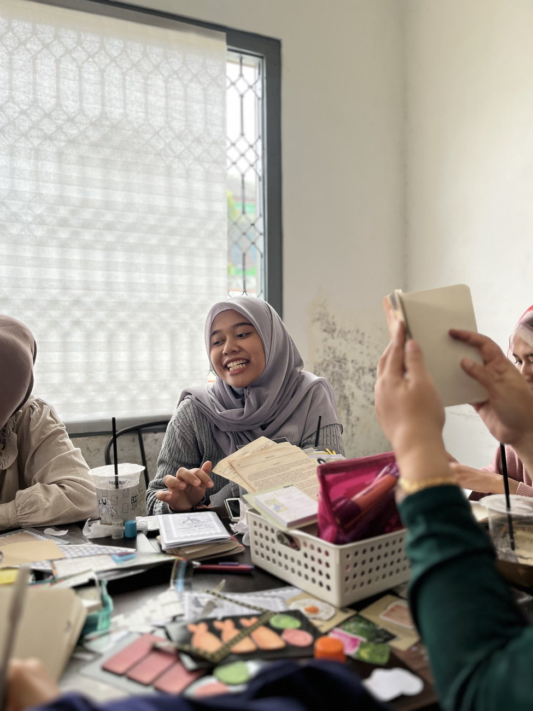

Sesi terdekat

Tracing Shadows, Mapping Stars
Tiga jam untuk yang belum pernah journaling sama sekali. Kami mulai dari satu pertanyaan pendek, lanjut ke tata halaman, lalu waktu bebas sampai lemnya kering. Tidak ada giliran bercerita, tidak ada halaman yang salah.
- Tanggal
- Waktu
- 15.00 sampai 18.00 WIB
- Format
- Workshop dipandu, 15 kursi
- Yang disediakan
- Jurnal, stiker, booklet prompt, deco station, satu minuman
- Yang perlu dibawa
- Tidak ada. Jurnal sendiri boleh dibawa kalau ingin
11 dari 15 kursi sudah terisi
Tanyakan slotnya ke kami